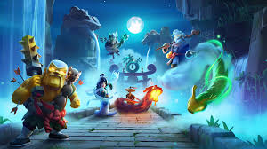

Decks have changed a lot over the years, ranging from homeade decks, to decks that could 3 crown in a minute.
Today we will talk about almost all these decks, give them a rating and see where they are in the current meta.
Cycle
Hog Rider
Arguably the most famous deck of all time. It's known for its incredibly fast cycle speed (around 2.6 average Elixir cost) to constantly pressure the opponent with the Hog Rider and out-cycle their best counter-cards.
Spell Bait
Goblin Barrel
A classic deck that forces the opponent to use their small spell (like The Log) on low-cost cards (Goblin Gang, Princess) to open up a tower-damaging push with the Goblin Barrel. It has remained popular and competitive for years due to its versatility, cheap defense and amazing chip damage.
Beatdown
Lava Hound, Ballon
The quintessential air beatdown deck. The strategy is to build a massive air push with the Lava Hound tanking for the destructive Balloon.
Beatdown
Golem
The original and perhaps heaviest ground Beatdown deck. It focuses on a large Elixir investment behind the King Tower to build an overwhelming push in double Elixir time.
Bridge Spam
Battle Ram
Known for aggressive, fast-paced pushes at the bridge with cards like Battle Ram and Bandit, while using P.E.K.K.A. as a strong defensive and counter-push unit.
Siege
X-Bow
The most well-known Siege deck. It requires exceptional defense and quick cycling to get the X-Bow to lock onto the opponent's tower from a distance, typically protected by a Tesla.
Control/Chip
Miner
Focuses on out-defending the opponent, gaining Elixir advantages, and slowly chipping away at the tower with the Miner/Poison combination.
Control/Beatdwon Hybrid
Graveyard
A powerful control deck that uses tanks like the Giant or Knight to shield the Graveyard spell, which summons Skeletons on the enemy tower. It often uses "splash" (area damage) cards like Baby Dragon and Ice Wizard for defense, hence "Splashyard."
Cycle/Beatdown
Royal Giant
Historically, a deck that was loved and hated. It uses fast-cycling cards and defensive units to get the Royal Giant to the bridge quickly to get damage on the tower.
Beatdown
Goblin Giant
One of the most aggresive decks in the game. Known for its great versatility and unstoppable pushes at the bridge, this deck is hard to stop.
Split Lane Pressure
Royal Hogs
A deck archetype famous for its ability to apply pressure in both lanes simultaneously, often using Royal Recruits to split defense and then supporting Royal Hogs on offense.
Beatdown/Spell Bait
Mega Knight, Goblin BArrel (variants)
A popular deck on the ladder that utilizes the Mega Knight for heavy defense and counter-pushes, often combined with a spell bait component to sneak in damage.
Cycle/Control
Hog Rider, Earthquake
A modern and highly effective cycle deck that uses the Earthquake spell to remove buildings (like Tesla or Cannon) that counter the Hog Rider, ensuring the win condition connects to the tower.
Siege/Control
X-Bow
A defensive X-Bow variant that relies on controlling the field with spells and defensive troops like Ice Wizard and Tornado to protect the X-Bow's lock onto the tower.
Control/Beatdown
Balloon
A highly agressive, fast deck where you use lumberjack and ballon to creat a ush that overhwlems and suprises the opponent.